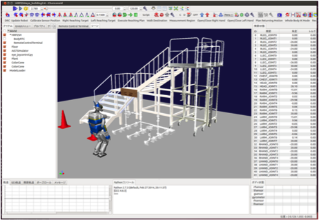
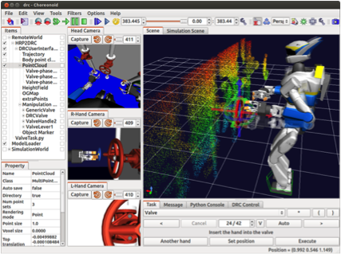
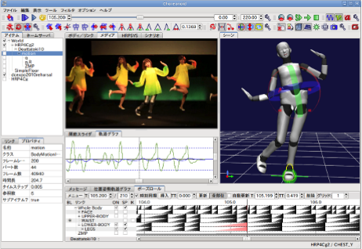

Choreonoidについて¶
この章ではChoreonoidについて解説します。
Choreonoidとは¶
Choreonoid（コレオノイド）は、オープンソースのロボット用統合GUIソフトウェアです。動力学シミュレーション機能や動作振り付け機能を標準で備えており、さらに独自の機能もプラグインとして追加実装可能です。
Choreonoidは「Choreograph」+「Humanoid」の造語です。
2007年からのNEDO知能化プロジェクトで動作振り付けソフトウェアとして開発を開始し、バージョン1.4からOpenHRP3のシミュレーション機能を統合しています。
Choreonoidの主な用途¶
Choreonoidは統合GUIプラットフォームであり、拡張機能と組みわせて様々な用途での利用が可能です。
ロボットシミュレータ
JVRC (ジャパンバーチャルロボティクスチャレンジ)の公式シミュレータとして使用されています。
遠隔操作インタフェース
災害対応ロボットの競技会、DRC Finalsにおいて、AIST-NEDOチームがロボットを遠隔操作するためのインタフェースとして使用しました。
ロボットの動作振り付け
自動バランス補正機能によりCGキャラクタのような感覚で振り付けすることができます。

Choreonoidのシミュレーション機能¶
動力学シミュレーション
回転関節、直動関節、簡易クローラ
産総研エンジン、阪大エンジンの他、Gazeboのエンジン等も切り替えて利用可能
センサシミュレーション
カメラ、LRF、RGBDカメラ、力センサ、ジャイロ、加速度センサ
ロボット用ミドルウェアとの接続機能
独自形式
RTミドルウェア
ROS（開発中）
シミュレータ活用の意義¶
シミュレータは以下のようにロボット開発のあらゆるフェーズで活用が可能です。
新しいロボットのデザイン
様々な機構を実物を製作することなしに短期間・低コストで検討できます
ロボットの制御ソフトウェアの開発
実ロボットの破損を気にすることなく開発できます
多数の開発者が平行して開発できます
ロボットの操縦訓練
実ロボットの破損を気にすることなく開発できます
ロボットの台数が少なくても多数のオペレータが訓練できます
ロボットを用いた作業計画の検証
事前作業計画を評価することができます